Курс позволит вам изучить битмейкинг, сведение и создание музыки с нуля — от первого бита до релиза на стриминговых площадках.
В программе:
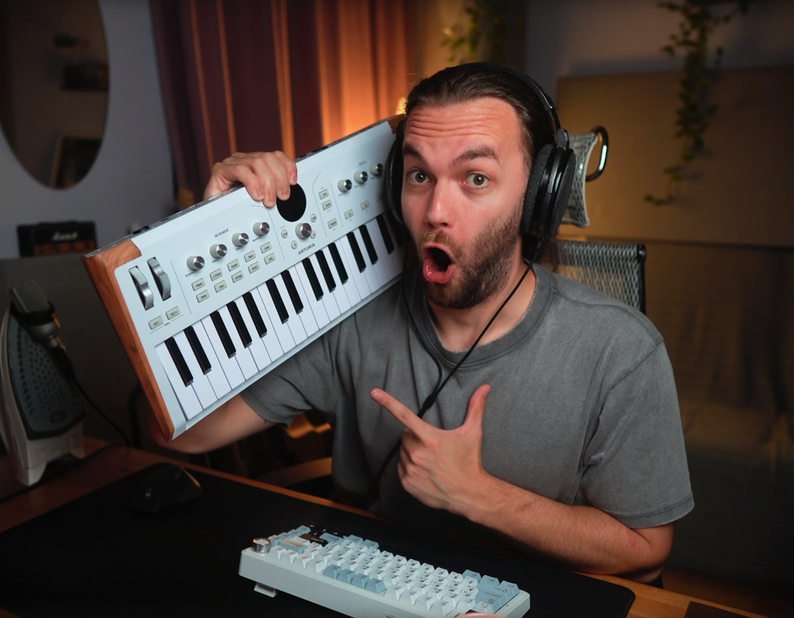
Начинаем с нуля: установка DAW, первые биты, сэмплы. К концу курса у вас будут свои треки и понимание всего процесса — без «музыкального образования».
Систематизируем базу: теория музыки, аккорды, продвинутые VST, сведение и мастеринг. Уйдёте от «на слух» к осознанному продакшну.
Научим писать инструменталы под ваш вокал, записывать и сводить голос дома, а в финальном этапе — выпускать треки на стриминговые площадки.
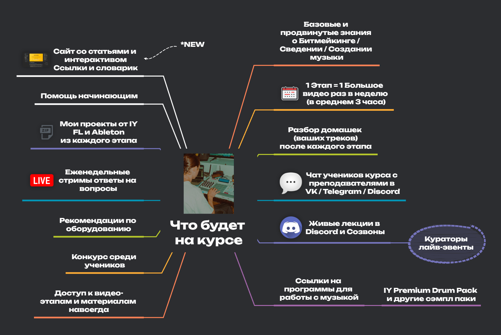
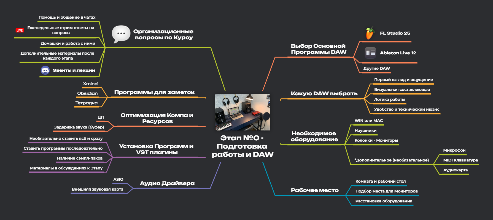
Устанавливаем и настраиваем FL Studio / Ableton, собираем рабочее пространство, знакомимся с интерфейсом. После этого этапа вы готовы писать первый бит.
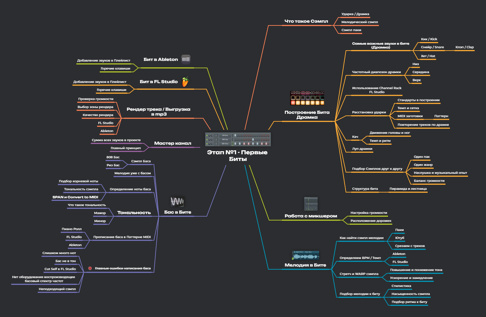
Сэмплирование, драмка, построение бита. Пишем первые треки и разбираем, как устроен продакшн изнутри.
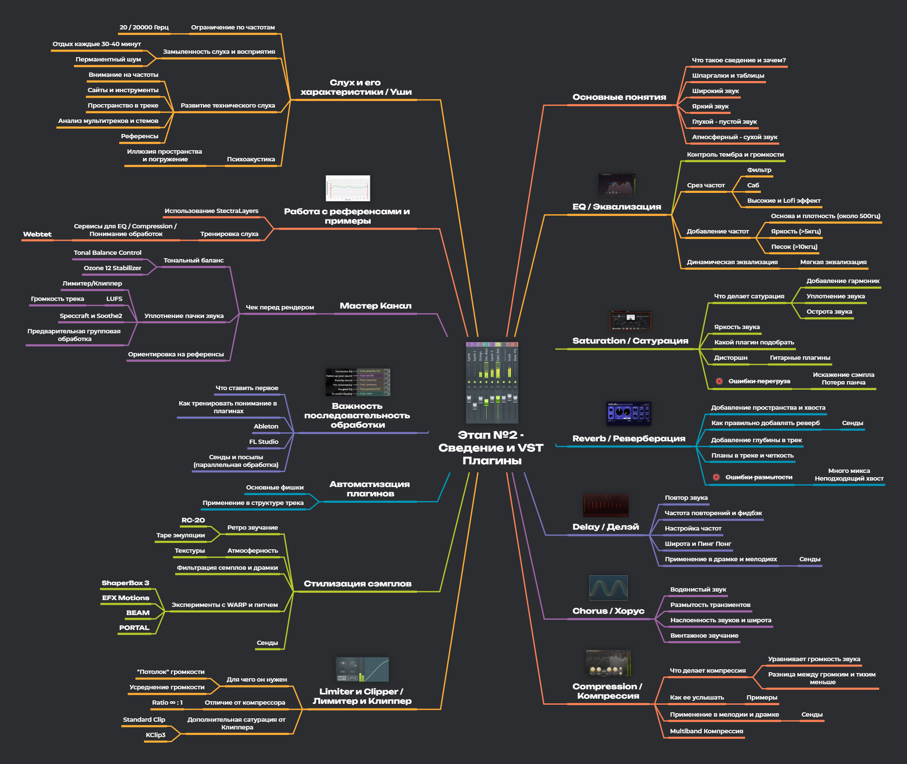
Учимся сводить треки, разбираем необходимые VST плагины: эквалайзеры, компрессоры, эффекты. Все паки звуков предоставляются в курсе.
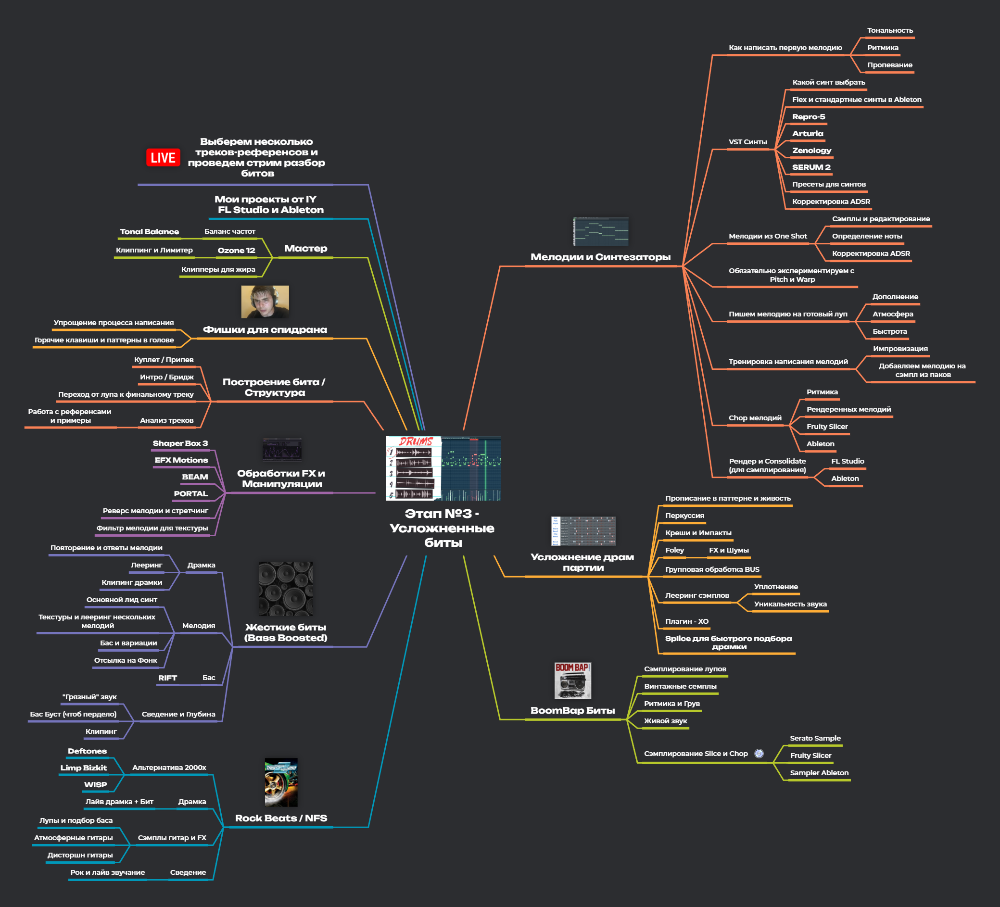
Идём дальше простых паттернов: гармония, мелодические линии, структура трека. Ваши домашки прослушиваем и разбираем.
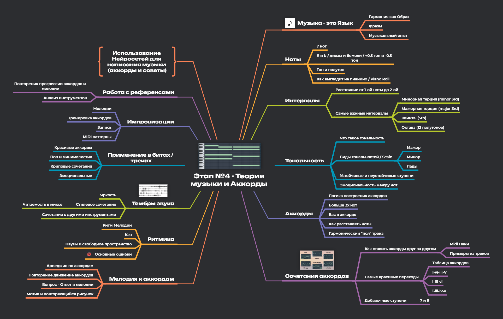
Аккорды, лады, прогрессии — только то, что реально нужно битмейкеру. После этого этапа мелодии пишутся осознанно, а не «на слух».
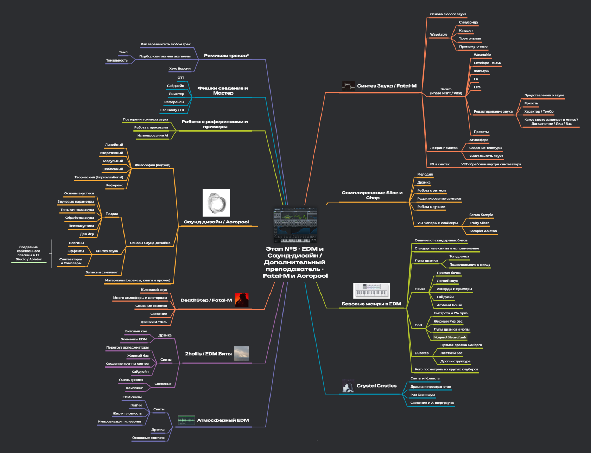
Синтез, саунд-дизайн, жанровая специфика EDM. Модуль ведёт куратор Acropool (Ivan Shorstkin) — EDM продакшн и саунд-дизайнер.
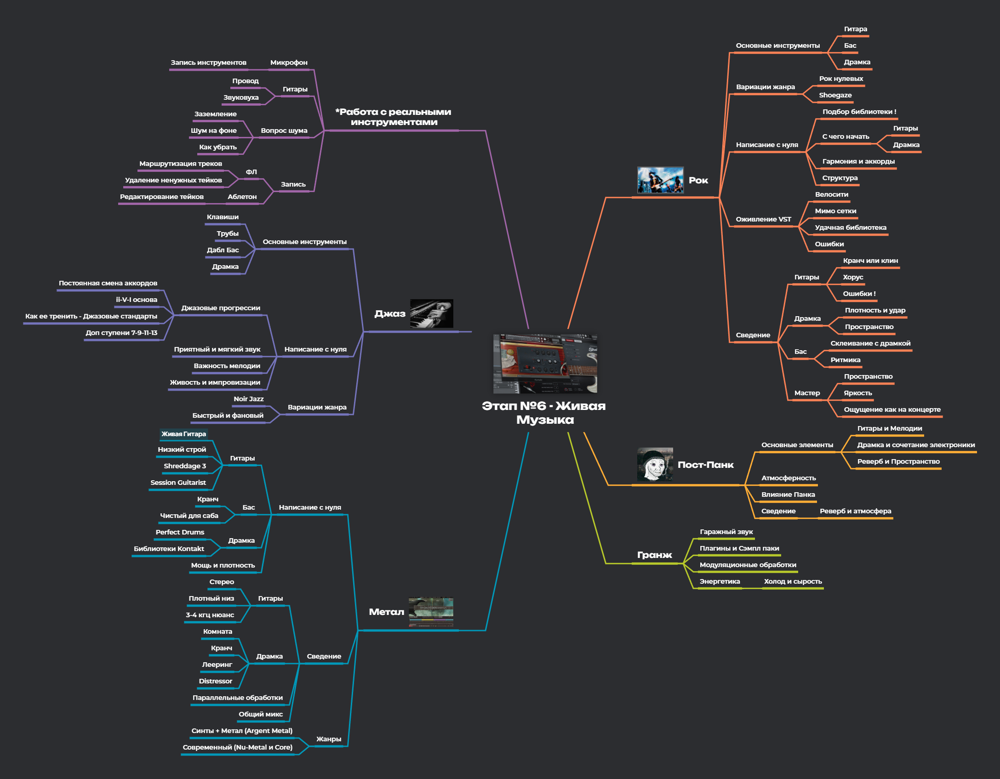
Рок, джаз, метал, пост-панк, гранж: написание с нуля на VST плагинах — гитары, бас, драмка. Работа с реальными инструментами и их записью.
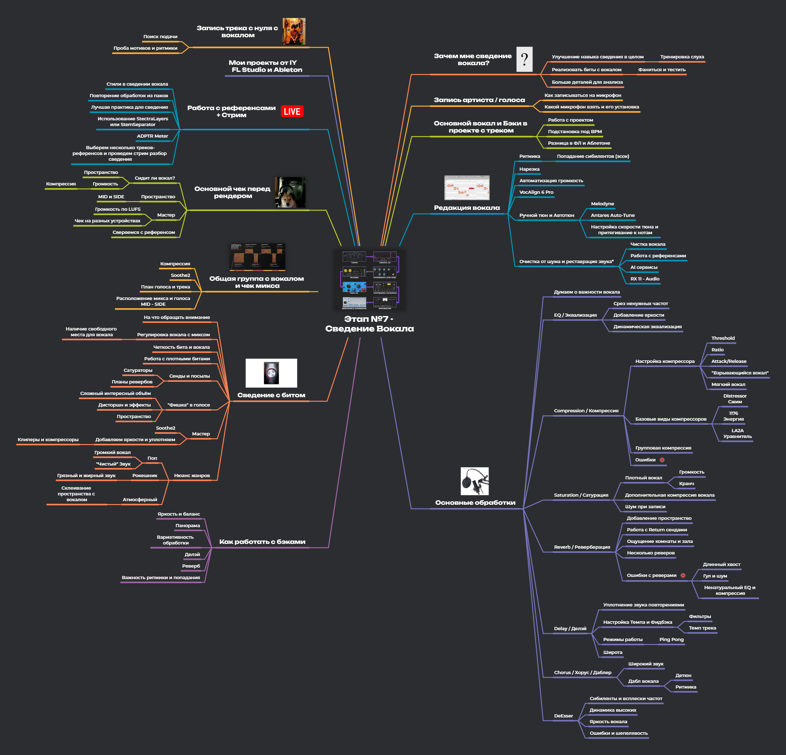
Запись вокала дома, обработка: эквализация, компрессия, реверберация, авотюн. Разбираем типичные ошибки и учимся получать чистый звук.
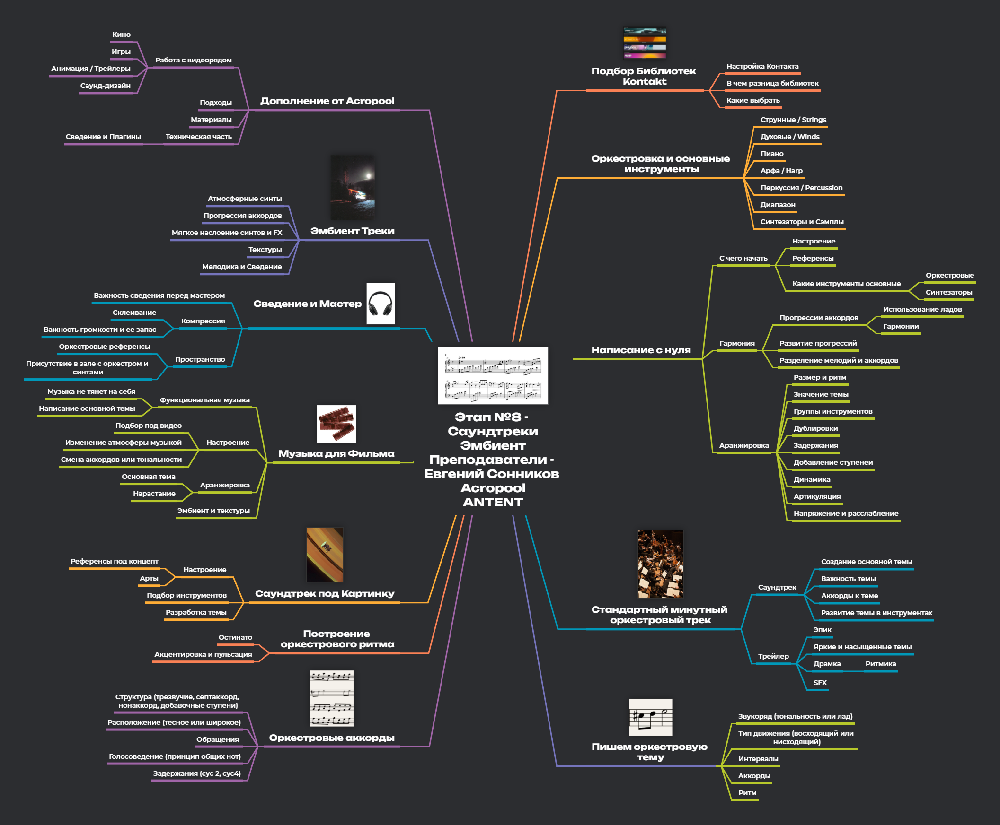
Оркестровые библиотеки, драматургия саундтрека, эмбиент-продакшн. Расширяем палитру звуков за пределы битмейкинга.
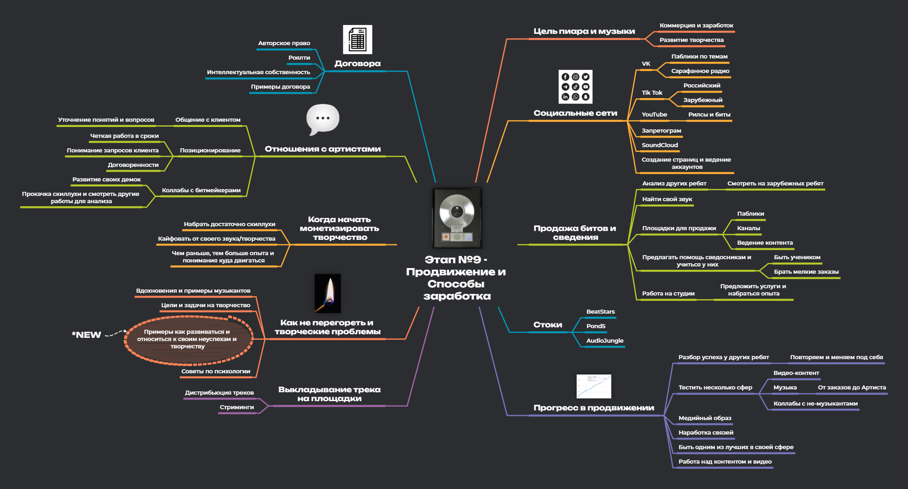
Выпуск треков на стриминговые площадки, дистрибуция, продвижение. Огромный плюс этапа — годной информации по этой теме почти нет нигде.
30+ часов детальных уроков с экрана DAW. Пересматривайте в любое время без ограничений.
Живые трансляции с разбором домашних заданий. Задавайте вопросы и получайте ответы в реальном времени.
Discord и Telegram с единомышленниками. Нетворкинг, коллаборации и поддержка сообщества.
Преподаватели проверяют домашние задания и дают персональные рекомендации по каждому треку.
Каждый — профессионал в своём деле. Кураторы организуют ивенты, создают дополнительные материалы по музыкальному продакшну и каждый день отвечают на вопросы.
Битмейкер, продюсер, автор топовых курсов по созданию музыки и сведению треков.
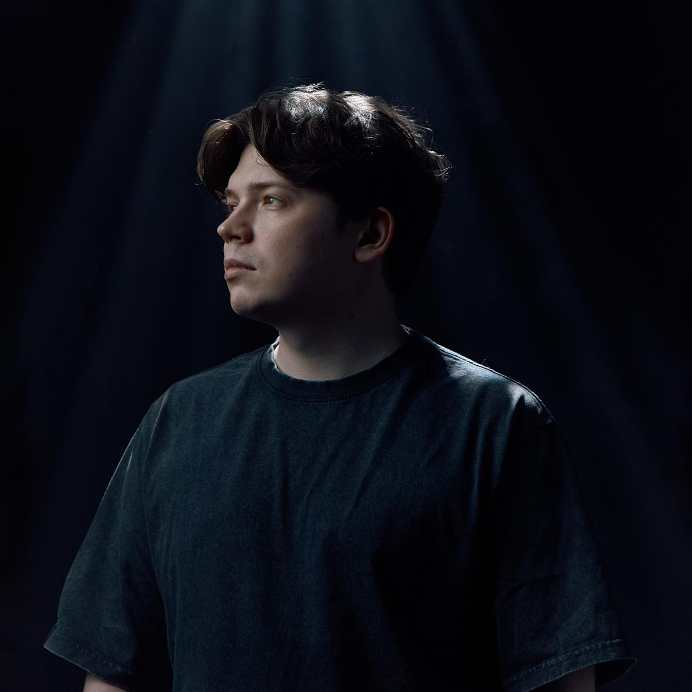
EDM продакшн и саунд-дизайнер, ведёт модуль по EDM жанрам.
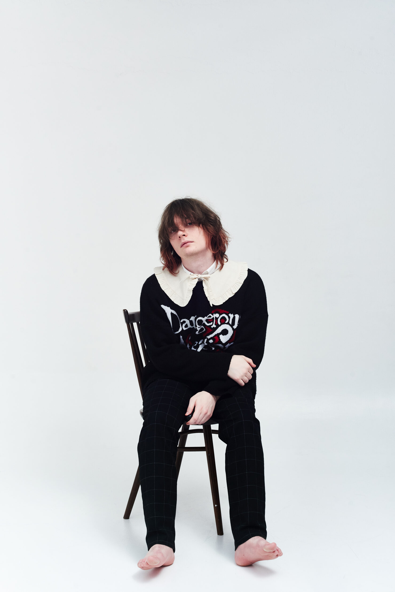
Ambient артист, десятки миллионов прослушиваний на Spotify.
Рэп-исполнитель, расскажет как записываться дома.
Битмейкер, ивенты в Discord и помощь в чатах.
Дополнительные материалы и помощь студентам.
Огромный плюс за этап с продвижением музыки. Щас мало можно найти годной инфы на эту тему. Огромное спасибо!!
Ребят, если б в государственных учреждениях так преподавали, клянусь, я бы был лютым ботаном!!
Всё очень классно, мне всё понравилось!!! Спасибо вам большое!! Я ни капли не жалею что решился всё таки записаться на поток!!!